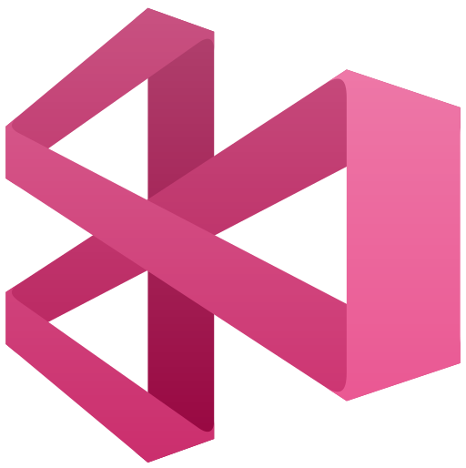
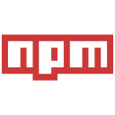
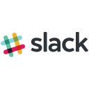
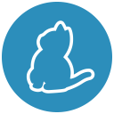
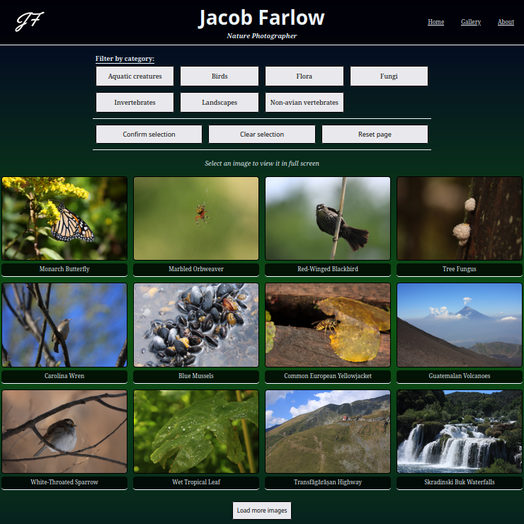

I'm a software engineer with a background in IT resource management, and I work on the front end of the stack. My primary code language is TypeScript, with React as my default framework. I'm a habitual learner, dedicated to living the maxim of "learn something new every day". I've held a variety of positions over the years, all of which have shaped me into someone who is perpetually curious and always seeking to learn and grow. My latest formal endeavor has earned me a certification as a ScrumMaster.
I was recently employed at HqO, Inc. as an App Release Engineer, with my primary role being to organize and automate the release process for HqO's apps. During my tenure, we scaled our release process from handling 50 whitelabels to over 170. More than just releasing new versions of existing apps, I also launched a fair number myself. In March 2022, I was interviewed for the Inside HqO series, which you can view as a PDF here. If you want a more granular view of the other work I did, take a peek at my
LinkedIn page.
I've been on the receiving end of some truly extraordinary mentorship and friendship over the years. I believe in paying it forward, and would be more than happy to lend a hand if I'm able. Please feel free to reach out if you need someone to look over some code, or have questions about best practices in building websites. If I don't have the answers, I can leverage my network to find someone who might. Software is a remarkably helpful community, and we all benefit from this cooperation.
I enjoy reading immensely--mostly fantasy and science-fiction--with an annual goal of at least 45 books. I delight in visiting used book stores, scouring the shelves to see where I can add to my collections. My personal library currently sits at over 900 books, and I can't wait to add more. One of my dreams is to have an entire room of a house be wall-to-wall, floor-to-ceiling bookshelves.
I am a self-taught drummer who jams to blues, blues-rock, and rock. I use a blend of Paiste, Meinl, and Sabian cymbals to round out my sound. Not surprisingly, my musical tastes extend far beyond my skills behind the kit. As a listener I'm particularly drawn to the syncopated rhythms of jazz, progressive rock, & progressive metal, and delight in the opportunities these genres have for experimentation and improvisation.
I enjoy watching sports, and have dedicated much of my viewing time to AS Roma, a professional soccer team based in the Italian capital, and Clemson Football, in support of my alma mater.
The past 6 years I've eagerly awaited each summer's Tour de France, and this year have found out just how big the world of cycling truly is. Discovering GCN+ has given me access to over 190 televised races, and I've watched every one of them! It has inspired me to spend more time on the bike, and I've found I enjoy pedalling away just as much today as I did when I was a child.
I have a passion for travel, and have been to 15 countries and 23 US States. I'm fascinated by other cultures, and dedicate a majority of my time abroad bouncing from one museum to the next, and documenting my travels with my trusty Canon camera. Beginning in 2021, I dove headlong into nature photography. It's something I've been dabbling with for ages, and decided to fully commit to it as a "professional hobby" that summer when I upgraded to a new lens. You can read more about that journey at my
photography portfolio site.
Frameworks, Languages, and Technology
Active experience:

App Center mobile app compilerCloudinary image & video API platformConfluence team wikiCSS stylesheet languagegit version control systemGitHub cloud-based git repositoryHTML markup languageJavaScript programming languageJira issue tracking platformMac operating systemNetlify developer platformNext.js front end framework

npm package manager for JavaScriptPostman API platformReact front end frameworkSass CSS preprocessor

Slack messaging platformTypeScript programming languageUbuntu operating systemVercel developer platformVS Code text editor

Yarn package manager
Previous experience:
Atom text editorBootstrap frameworkEmber front end frameworkExpress web app frameworkGrunt task runnerHandlebars templating languageHeroku cloud platformjQuery libraryMongoDB data platformNode.js runtime environmentRuby on Rails web app frameworkRuby programming languageTrello web-based Kanban program
Projects
Active focus:
(October 2023 update): I have completed my certification to become a ScrumMaster! Achieving this certification has brought a semblance of order and understanding to my experience as an engineer. Having previously worked on scrum teams, I never focused too hard about why we did some things--just that they seemed to make sense. With this course I now understand more completely the reasons scrum events are an integral part of the development process. Credential details can be
viewed here.
In addition to my new certification, I've done some behind-the-scenes work on this portfolio page. I replaced the inline SVGs with image elements, and updated the display to move the descriptors into a figure caption. Previously, this information was hidden behind a cursor hover action.
(September 2023 update): I have launched my photography portfolio! This is a special moment for me, as I worked relentlessly to sift through the more than 70,000 photos I've taken to select the very best of my nature photography. Beyond simply selecting the images, each one has a custom caption and includes species identification. In addition to all the work that entails, I built the portfolio from the ground up using Next.js & TypeScript as the code, Cloudinary as the CDN & API, and Vercel as the site host. Working with Next.js was a brand new endeavor for me, and I'm very glad I went this route.
Take a look!
(July 2023 update): I'm still working on the photo gallery project. When it came time to deploy I encountered some unexpected difficulties with serving the back end in production. While the project was built as React/Express, this is not the best tech setup for what I'm attempting to accomplish. The scope of the project changed along the way, and the current iteration is over-engineered. Therefore, I'm rebuilding the project as a Next.js app to leverage serverless functions. I'll be deploying this to Vercel, and both Vercel and Cloudinary suggest this approach.
I've made some minor updates to this portfolio to include some better information about the ultimate goal of each of the practice projects.
(May 2023 update): I revamped this portfolio page to remove bloated code, close security vulnerabilities, and update dependencies, and upgrade from Webpack 3 to Webpack 5. I'm continuing to work on my photo gallery project. There are some kinks with how the Cloudinary API serves data that I need to resolve, as well as finalizing accessibility support for mobile view before I can publish this project.
(August 2022 update): I'm working on building out a photo gallery using React, Typescript, Express, and the Cloudinary API. I'm excited to expand my Typescript knowledge, revisit Express, and dabble with a new API. Let's be honest, the early projects where I built my own back end leave a lot to be desired. But hey, that was early days when I was just learning there's more to software than HTML! This upcoming project will be hosted on Netlify, which is nice and easy, even if it will get a wacky URL.
I just wrapped up version 3.1.1 of my Recipe Search app! This latest update, while minor, addressed a number of security vulnerabilities in the code. Code maintenance is a critical tool in an engineer's belt, and this was the first time I got to really dive into it solo.
Give it a go!
Of course, my learning is never complete. Every time I try out a new-to-Jacob project, read a code article, or watch a code tutorial I'm learning something new, or deepening my comprehension of engineering concepts.
Completed projects:
Select a screenshot to navigate to the finished project, or use the links below each image to view the code directly. Each of these was was built as a hands-on way to learn something specific.

JF Nature
Explore the natural world! Join me as I share the best of my adventures split into these seven general categories: Aquatic creatures, Birds, Flora, Fungi, Invertebrates, Landscapes, & Non-avian vertebrates.
Learning goal: To learn the Next.js framework and serverless functions
These projects are dead, are not maintained, and are non-functional. These were part of my General Assembly coursework, required basic user authentication, and may leverage Heroku for backend support. I'm keeping them here more as a reminder of how far I've come than to show off something that's neato.